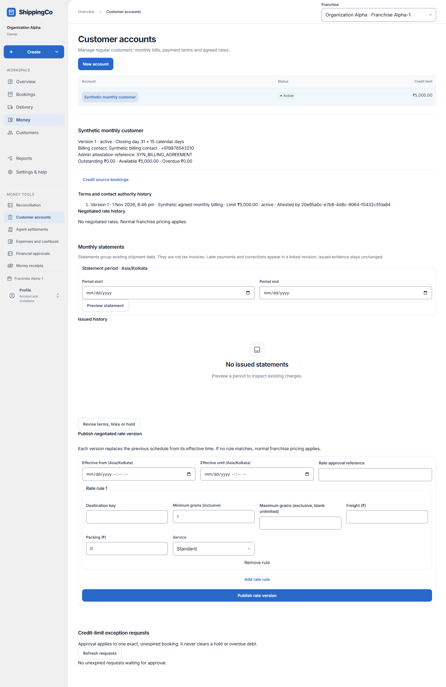
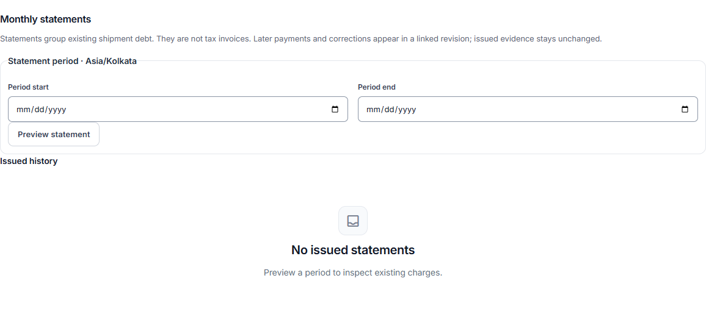

Customer statements
What this helps you do
- Review and issue a statement of existing account charges and payments.
Open this feature
- Money > Customer accounts > select account > Monthly statements.
- Check the active branch first. Available actions depend on your role and the selected record.


Preview the period
- Enter required Period start and Period end in the displayed Asia/Kolkata period, then Preview statement.
- Review opening, charges, credits, payments, refunds and closing. Debt, refundable credit and unallocated advance are separate values.
- Open shipment for a ledger row. Expand Source charge, tax and allocation evidence to inspect original charges, tax, receipt, applied payments and corrections.
- Expand Advance and return evidence to compare received, allocated, seller COD reserved, returned and unused money.
Issue, reopen and export
- An administrator can Issue statement from a non-empty preview. Preview alone does not issue a document; issuing groups existing charges without receiving money or creating another sale.
- Open a revision in Issued history to read that saved statement. Check the previous-statement reference and use More statements for older records.
- With export access, Capture private CSV from the issued statement. Download retained CSV retrieves the saved export. Keep its private customer and payment details secure.
Fields and when to use them
These fields belong to the actions above. Complete the fields for your selected action; optional filters may stay blank.
- Period start: Enter the period start for this action, using the time zone shown. Use when shown for the selected action.
- Period end: Enter the period end for this action, using the time zone shown. Use when shown for the selected action.
If you need to retry
- No records: check branch, account or customer and filters. Use Load more where offered before deciding a record is missing.
- Invalid or missing value: read the form message, correct the draft, then review amounts and references again.
- Uncertain save: use the offered retry for the same request. Do not create a second payment, return, expense or application to guess whether the first saved.
- Changed evidence or policy: refresh current records and review them before a new request. A saved report retains its captured figures; create another report for current results.
About this guide
Checked against the current screen code on 1 November 2026. This explains app behaviour, not tax or accounting advice. Buttons and records can differ by role.